class: title-slide count: false .logo-title[] ## ELECTENG 311 # Electronics Systems Design ### Closed Loop Controller Design .TitleAuthor[Duleepa J Thrimawithana] --- layout: true name: template_slide .logo-slide[] .footer[[Duleepa J Thrimawithana](https://www.linkedin.com/in/duleepajt), Department of Electrical, Computer and Software Engineering (2026)] --- name: S1 # Learning Objectives - Why do we need closed loop control? - Behavior of a closed loop controller - Steady-state error - Impact of gain on steady-state error - Stability of the controller - PI controllers - Peak current mode control - UC3843 control IC - Functional diagram of a UC3843 - How is peak current mode control achieved? - How to setup the oscillator? - How do we provide a feedback of current? --- class: title-slide layout: false count: false .logo-title[] # Closed-Loop Control ### An Introduction --- layout: true name: template_slide .logo-slide[] .footer[[Duleepa J Thrimawithana](https://www.linkedin.com/in/duleepajt), Department of Electrical, Computer and Software Engineering (2026)] --- name: S2 # Open-Loop Control (PI) .center[<p>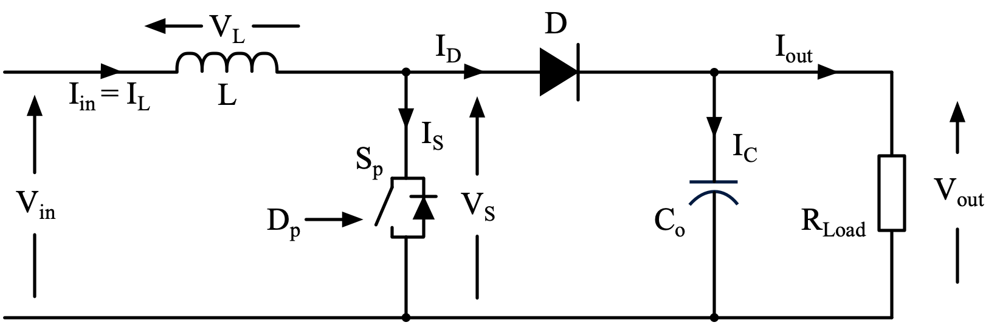</p>] - If we know precise details of our boost converter, then for example, using a microcontroller we can generate the correct D for the switch to achieve our target output - We call this type of control **open-loop control** as we do not monitor the converter to deduce D we should be operating at - In real life, component have losses and the load resistance will change, making it impossible to know D needed for a specific V<sub>out</sub> since, \\[ V\_{out} = \frac {P\_{out}} {I\_{out}} = \frac { \eta P\_{in}} { I\_{out}} = \frac { \eta V\_{in} I\_{in}} { (1-D) I\_{in}} = \frac { \eta V\_{in} } { (1-D) }\\] --- name: S3 # Open-Loop Control (PII) .center[<p>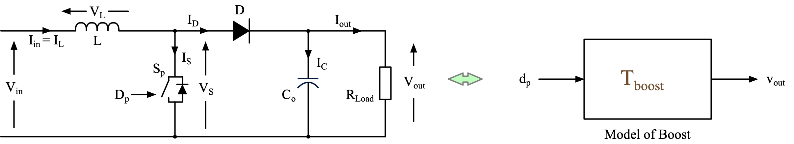</p>] - Can be modelled as a black box, which takes a change in D as the input and produce V<sub>out</sub> as the output - With simplification, mathematically the transfer function, T<sub>boost</sub>(s), can be derived as, \\[ T\_{boost}(s) = \frac{\hat{v}\_{o}}{\hat{d\_p}} = \frac{V\_{in}}{(1-D)^{2}}\cdot\frac{\left(1+sr\_{C}C\right)\left(1-\dfrac{sL}{(1-D)^{2}R\_{Load}}\right)}{1+\dfrac{sL}{(1-D)^{2}R\_{Load}}+\dfrac{s^{2}LC}{(1-D)^{2}}} \\] --- name: S5 # Closed-Loop Control & Feedback .center[<p>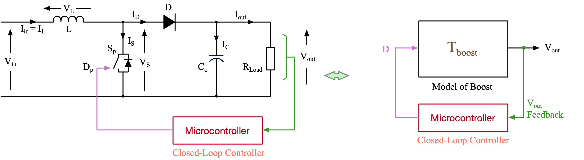</p>] - One way to know if the load or other circuit parameters that impacts V<sub>out</sub> has changed is to measure V<sub>out</sub> and use this information inside the microcontroller to help deduce an appropriate D to use - This means we monitor and use V<sub>out</sub> as a **feedback** to **control** V<sub>out</sub> - We call this type of control **closed-loop** control - There are many ways to use V<sub>out</sub> feedback to derive D but it is not a straightforward task - This is because V<sub>out</sub> is dependent on many circuit parameters - A feedback of just only V<sub>out</sub> would not tell us which of those parameters have changed --- name: S6 # Error Voltage .center[<p>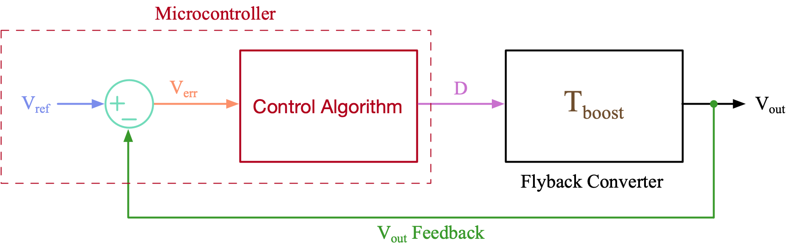</p>] - As the first step, we can compare the feedback of V<sub>out</sub> with our target or the **reference** V<sub>out</sub>, V<sub>ref</sub>, to determine if D needs to be increased or reduced - V<sub>ref</sub> - V<sub>out</sub> is referred to as the **error voltage**, V<sub>err</sub> - Note that V<sub>out</sub> is related to D in a boost converter - A negative V<sub>err</sub> tells that D needs to be reduced - A positive V<sub>err</sub> tells that D needs to be increased - How do we deduce by how much to reduce/increase D by? --- name: S7 # Proportional Controller .center[<p>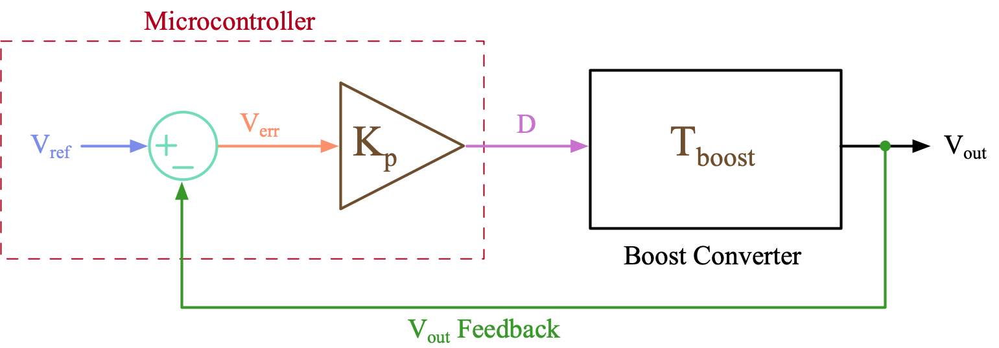</p>] - Since V<sub>out</sub> is proportional to D, we can apply a **proportional gain**, K<sub>p</sub> to V<sub>err</sub> to deduce an approximate D - To find which value of K<sub>p</sub> to use, lets express V<sub>out</sub> as a function of K<sub>p</sub> \\[ V\_{out} = V\_{err} K\_{p} T\_{boost} = \left( V\_{ref} - V\_{out} \right) K\_{p} T\_{boost} \quad \Rightarrow \quad V\_{out} = V\_{ref} \frac {K\_p T\_{boost}} {1 + K\_p T\_{boost}} \\] --- name: S8 # Proportional Gain - K<sub>p</sub> .center[] - From our [analysis](#S7), we could see that if K<sub>p</sub> is chosen to be large such that K<sub>p</sub>T<sub>flybk</sub> >> 1, then V<sub>out</sub> ≈ V<sub>ref</sub> - We could also observe this in our system diagram where D = K<sub>p</sub>V<sub>err</sub> - Since 0 ≤ D ≤ 1, larger the K<sub>p</sub> smaller the V<sub>err</sub> - Thus, a proportional controller with a sufficiently large K<sub>p</sub> will help achieve an V<sub>out</sub> that closely follow a target voltage set by V<sub>ref</sub> - How large can K<sub>p</sub> be and would there be any adverse issues using a large K<sub>p</sub>? --- name: S10 # Instability (PI) - V<sub>ref</sub> can be modelled as a sinusoidal signal to emulate a user changing V<sub>ref</sub> to set different V<sub>out</sub> values - Disturbances we make to the system, e.g., changing V<sub>ref</sub> or R<sub>load</sub>, can be considered to generate a spectrum of frequencies - In a converter, to store energy in L<sub>p</sub> and to charge/discharge C<sub>o</sub> takes time, and thus a change in D does not result in an immediate change in V<sub>out</sub> - T<sub>boost</sub> captured these delays as pols and zeros in its transfer function - Lets exaggerate these delays and assume that at the frequency of V<sub>ref</sub> the converter introduce a half-cycle delay (i.e. 180<sup>0</sup> delay - A 180<sup>0</sup> delay to a sinusoidal wave represents a negative gain - Thus, T<sub>boost</sub> at this specific frequency can be written as -T<sub>boost</sub> - Also lets assume, |T<sub>boost</sub>| at this frequency has certain magnitude --- name: S11 # Instability (PII) .center[<p>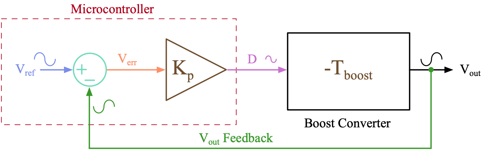</p>] - We can express V<sub>out</sub> under the specific conditions mentioned in the previous slide, \\[ V\_{out} = -V\_{ref} \frac {K\_p \left| T\_{boost} \right|} {1 - K\_p \left| T\_{boost} \right| } \\] - From this analysis we can see that V<sub>out</sub> tends to infinity when K<sub>p</sub>T<sub>boost</sub> approaches 1 - Thus to ensure the closed-loop controlled system is **stable**, K<sub>p</sub> needs to be sufficiently small and satisfy K<sub>p</sub>T<sub>boost</sub> < 1, if T<sub>boost</sub> introduce a 180<sup>0</sup> delay at a certain frequency - Note that, T<sub>boost</sub> will have a frequency dependent gain and a phase --- name: S13 # Sensitivity to Noise .center[<p>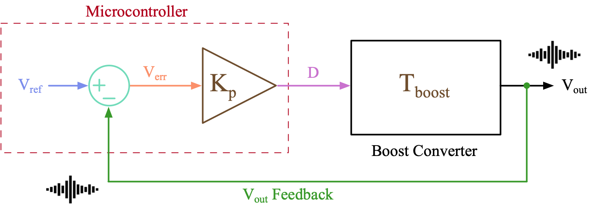</p>] - Any SMPS generate significant electromagnetic noise during operation - In addition, V<sub>out</sub> itself has a ripple across it that results from the physical nature of the circuit - A larger K<sub>p</sub> can amplify these unwanted components to a point that they interfere with the closed-loop controller operation - Both the noise and V<sub>out</sub> ripple components couples in with the closed-loop controller mainly though the feedback signal - The selected K<sub>p</sub> must ensure the system is not reacting to noise --- name: S14 # Integral Controller .center[<p>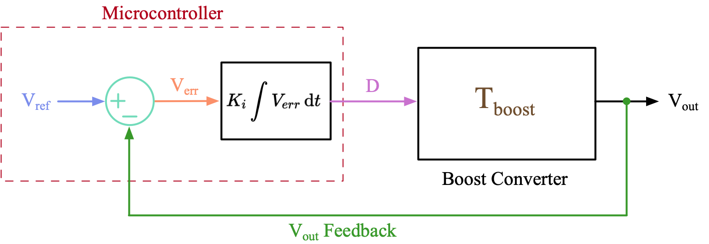</p>] - With a proportional controller, we cannot ensure that V<sub>out</sub> is exactly the same as V<sub>ref</sub> (i.e., V<sub>err</sub> = 0) - To avoid this drawback, we can employ an integral controller, which derives D by integrating V<sub>err</sub> over time \\[ D = K\_i \int {V\_{err}} \, \mathrm{d}t \\] - D settles at the correct value as the integrator accumulates the error until V<sub>err</sub> = 0 --- name: S15 # Integral Gain - K<sub>i</sub> .center[] - Regardless what the **integral gain**, K<sub>i</sub>, is set to, an integral controller achieves 0 steady-state error - A larger K<sub>i</sub> helps the controller to reach steady-state faster - An integral controller introduces a 90<sup>0</sup> phase delay into the system - Together with the phase delay introduced by the converter, this could lead to system reaching instability faster - Care must be taken to ensure the system is stable when using an integral controller --- name: S17 # Proportional Integral Controller (PI) .center[<p>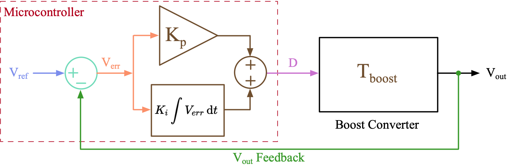</p>] - We can combine the proportional and the integral controllers to implement a much better controller - This type of controllers are referred to as Proportional Integral or **PI** controllers - K<sub>p</sub> sets the **proportional gain** while K<sub>i</sub> sets the **integral gain** \\[ D = K\_p V\_{err} + K\_i \int {V\_{err}} \, \mathrm{d}t \\] - Increasing K<sub>p</sub> and K<sub>i</sub> helps V<sub>out</sub> to reach towards the target faster but can create overshoot --- name: S18 # Proportional Integral Controller (PII) .left-column[ - Though the integral term in a PI eliminates steady-state error, it adds a phase delay to the system pushing it towards instability - Larger K<sub>i</sub> thus lead to longer settling time - To understand how K<sub>p</sub> and K<sub>i</sub> impacts the closed-loop operation, we can use the S-domain transfer function of a PI controller, \\[ D = K\_p V\_{err} + \frac {K\_i } {s} V\_{err} \quad \Rightarrow \quad \frac {D} {V\_{err}} = T\_{PI} = K\_p + \frac {K\_i } {s} \\] - To help sketch T<sub>PI</sub> bode plot, we can rewrite as, \\[ T\_{PI} = K\_p \frac { s + K\_i / K\_p} {s} = K\_p \frac { s + \omega\_z } {s} \quad \text {where} \quad \omega\_z = \frac {K\_i} {K\_p} \\] - ω<sub>z</sub> sets the frequency at which phase delay drops to 0<sup>0</sup> ] .right-column[ <p>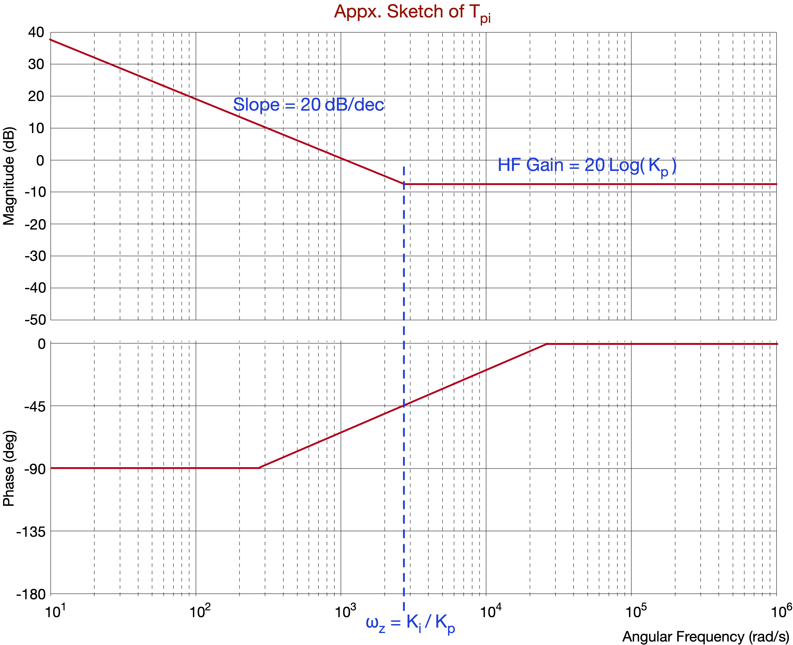</p> ] --- name: S20 # Peak Current Model Controller (PI) .center[<p>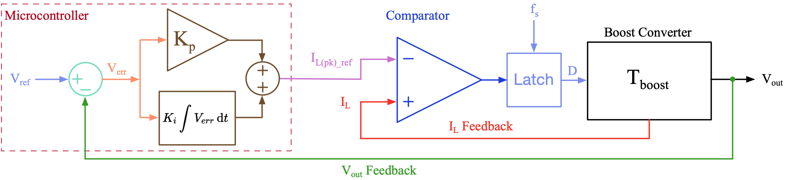</p>] - Our analysis of a boost converter showed that I<sub>L(pk)</sub> is proportional to D \\[ \Delta I\_L = \frac{V\_{in} }{L} DT\_{s} \\] - As such, instead of directly controlling D, we can control I<sub>L(pk)</sub> to achieve a similar outcome - This is **peak current mode control** and is a very common/preferred control method - The output of the PI controller now sets the reference peak current, I<sub>L(pk)_ref</sub> --- name: S21 # Peak Current Model Controller (PII) .center[] - A comparator is commonly used to compare I<sub>L</sub> fed to its non-inverting input with I<sub>L(pk)_ref</sub> fed to its inverting input - When I<sub>L</sub> rises above I<sub>L(pk)_ref</sub>, comparator outputs 0 indicating switch should be turned-off - A latch is typically used to hold the off-state of the switch until the end of the time-period - An oscillator connected to the latch sets the switching frequency - Since I<sub>L(pk)</sub> provide additional information we can now improve the functionality (e.g., implement input over current protection) --- class: title-slide layout: false count: false .logo-title[] # The UC3843 Controller IC ### Operating Principles --- layout: true name: template_slide .logo-slide[] .footer[[Duleepa J Thrimawithana](https://www.linkedin.com/in/duleepajt), Department of Electrical, Computer and Software Engineering (2026)] --- name: S22 # Proposed Controller Implementation .center[<img src="img/System.png" height="250px">] - In your project, we will use a UC3843 peak current mode controller IC to drive S<sub>p</sub> in order to generate V<sub>out</sub> requested by the user - The PI controller will be implemented on an ATmega328PB and it will generate I<sub>L(pk)_ref</sub> for the UC3843 - Since ATmega328PB does not have a digital-to-analog converter (DAC), we will use its PWM unit with an RC filter to implement a DAC --- name: S23 # UC3843 Functional Diagram .center[<p>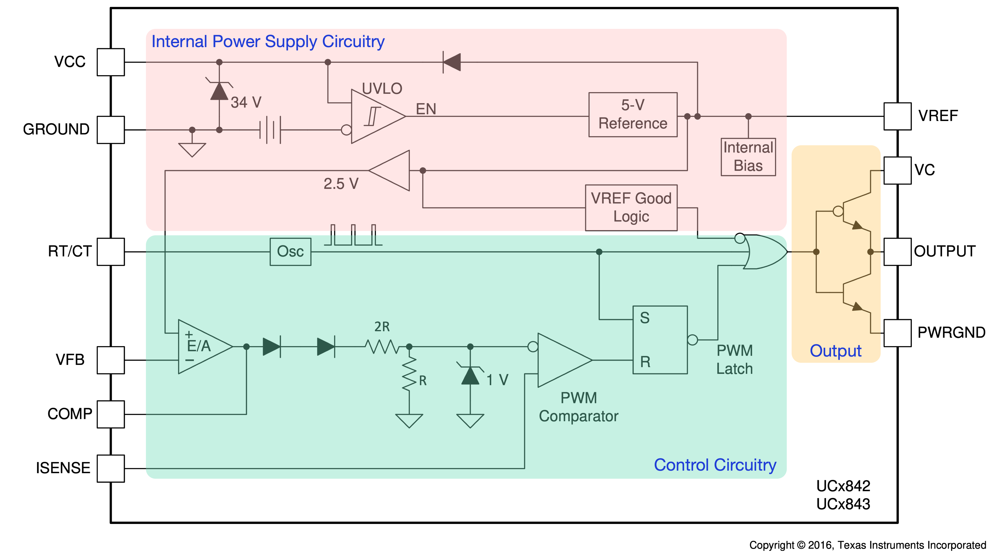</p>] --- name: S24 # Internal Power Supply Circuitry .center[<p>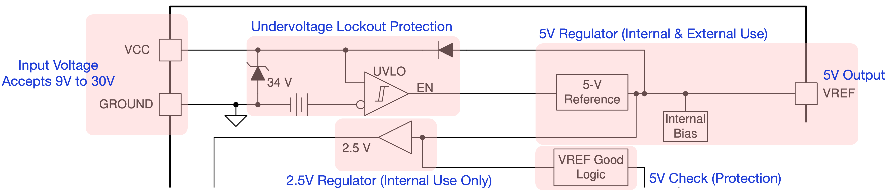</p>] - To power the IC connect a voltage source between VCC (+) and GNG (-) pins - Needs to be more than 8.4V as the undervoltage lockout (UVLO) protection will otherwise turn-off due to insufficient input voltage - Input voltage needs to be less than 30V to avoid damaging the IC - 15V to 20V is a good input voltage to aim for - IC generates its own 5V to power internal circuitry and this is also available at VREF - IC also generate its own 2.5V as a reference but this is not made available for us to use --- name: S25 # Output Circuitry .center[<p>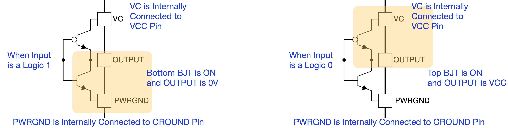</p>] - We call this output circuit configuration a **Totem Pole** or a **Push-Pull** configuration - OUTPUT pin can be connected directly to the gate of the MOSFET switch used in our flyback converter through a small resistor - This resistor limits the current drawn from OUTPUT pin to less than 1A - The output of the control circuitry determines if the OUTPUT pin is 0V or VCC - If control circuitry sends logic '1' OUTPUT is 0V (i.e., MOSFET switch is off) - If control circuitry sends logic '0' OUTPUT is VCC (i.e., MOSFET switch is on) --- name: S26 # Control Circuitry - Oscillator .center[<p>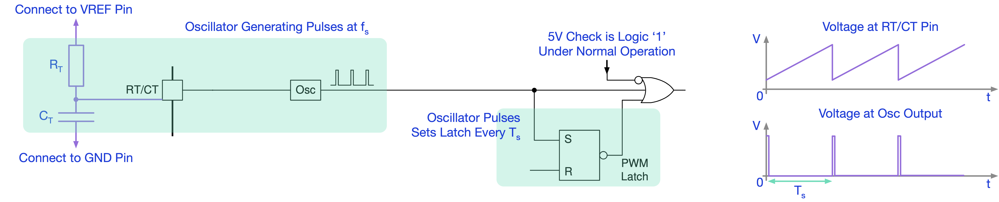</p>] - Connecting a resistor, R<sub>T</sub>, and a capacitor, C<sub>T</sub>, at the RT/CT pin configures the oscillator to operate at the required PWM frequency, f<sub>s</sub> - Voltage at the RT/CT pin is a sawtooth waveform that has a frequency f<sub>s</sub> - Every time this sawtooth waveform reach its peak voltage the oscillator generates an output pulse that 'sets' the PWM latch - When PWM latch is 'set' it outputs logic '0' making the 'OR' gate output a logic '0' causing MOSFET switch of the flyback converter to turn-on --- name: S27 # Selecting R<sub>T</sub> & C<sub>T</sub> Values .center[<p>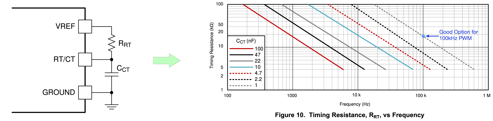</p>] - The values of R<sub>T</sub> and C<sub>T</sub> determines f<sub>s</sub> (i.e., PWM frequency) - The [datasheet](https://www.ti.com/lit/ds/symlink/uc3843.pdf?ts=1627207030483&ref_url=https%253A%252F%252Fwww.ti.com%252Fproduct%252FUC3843) provides a plot that shows the relation between R<sub>T</sub>, C<sub>T</sub> and f<sub>s</sub> - E.g., To setup a 100kHz we can use a 1nF capacitor for C<sub>T</sub> and approximately a 18kΩ resistor for R<sub>T</sub> - Once you connect the selected R<sub>T</sub> and C<sub>T</sub>, the UC3843 will generate a PWM signal at the OUTPUT pin - The duty-cycle, D, of this PWM signal is controlled by the internal comparator that compares I<sub>L</sub> with I<sub>L(pk)_ref</sub> we generate from the ATmega328PB --- name: S28 # Control Circuitry - OpAmp (PI) .center[<p>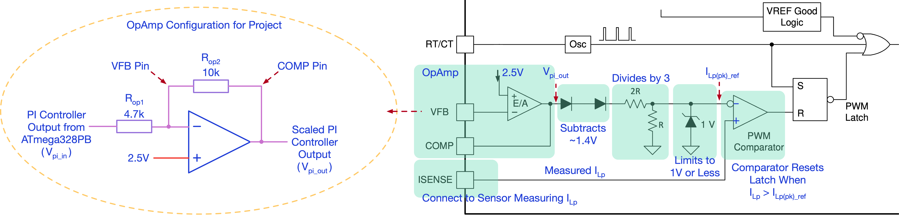</p>] - The UC3843 has an internal OpAmp to produce I<sub>L(pk)_ref</sub> at the inverting input to the comparator - Though we don't need it for our design, we cannot by pass it - The non-inverting terminal of this OpAmp is supplied internally with 2.5V - The inverting terminal, VFB, is available for us to configure it as an inverting amplifier - We do this by connecting resistors R<sub>op1</sub> and R<sub>op2</sub> - We will supply the PI controller output coming from the ATmega328PB to this OpAmp through R<sub>op1</sub> --- name: S29 # Control Circuitry - OpAmp (PII) .center[] - The output of the OpAmp, V<sub>pi_out</sub>, is a scaled version of V<sub>pi_in</sub> generated by the ATmega328PB, \\[ V\_{pi\\\_out} = 2.5 + \left( 2.5 - V\_{pi\\\_in} \right) R\_{op2}/R\_{op1} \\] - The output from our ATmega328PB (i.e., V<sub>pi_in</sub>) is going to be in the range 1V to about 4V - So lets set R<sub>op1</sub> = 4.7kΩ and R<sub>op2</sub> = 10kΩ in our project (i.e., V<sub>pi_out</sub> = 7.8V - 2.1V<sub>pi_in</sub>) - In this case V<sub>pi_out</sub> changes roughly from 0V to 5V when V<sub>pi_in</sub> changes from 4V to 1V --- name: S30 # Control Circuitry - Comparator (PI) .center[] - 1.4V is subtracted from V<sub>pi_out</sub> and divided by 3 before feeding to the inverting input of comparator - This sets I<sub>L(pk)_ref</sub> and its maximum value is clamped to 1V by a Zener diode - When the voltage at ISENS pin exceeds I<sub>L(pk)_ref</sub>, the comparator outputs 1 to reset the latch - When PWM latch is 'reset' it outputs logic '1' making the 'OR' gate output a logic '1' causing MOSFET switch of the flyback converter to turn-off - When the PI controller output, V<sub>pi_in</sub> is 1V (i.e., V<sub>pi_out</sub> ≈ 5V), I<sub>L(pk)_ref</sub> will be 1V --- name: S31 # Control Circuitry - Comparator (PII) .center[] - When the PI controller output, V<sub>pi_in</sub> is 4V (i.e., V<sub>pi_out</sub> ≈ 0V), I<sub>L(pk)_ref</sub> will be 0V - This means I<sub>L(pk)_ref</sub> will be a value between 0V and 1V - However, in the generic current mode controller implementation we investigated [earlier](#S21) a larger V<sub>pi_in</sub> should result in a larger peak current - This issue is introduced because V<sub>pi_in</sub> goes through the inverting OpAmp in the UC3843 - We can account for this in our ATmega328PB program --- name: S32 # Designing the Current Sensor (PI) .left-column-50[ <p>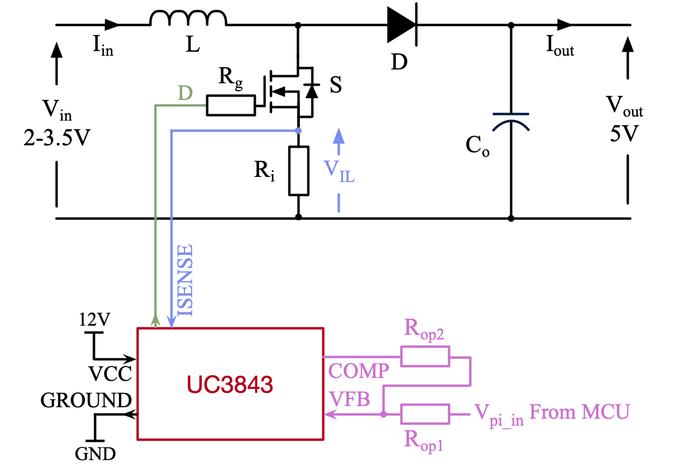</p> ] .right-column-50[ - A measurement of I<sub>L</sub> needs to be provided at the ISENS pin to enable UC3843 to control I<sub>L(pk)</sub> - A current sense resistor, R<sub>i</sub>, can be used to measure I<sub>in</sub>, which is the same as I<sub>L</sub>, \\[ V\_{IL} = I\_{in}R\_i = I\_{L}R\_i \\] - Since the maximum value of I<sub>L(pk)_ref</sub> is 1V, the **maximum I<sub>L(pk)</sub>** allowed is, \\[ I\_{L(pk)\\\_{max}} = 1 / R\_i \\] - We should design I<sub>L(pk)_max</sub> to be larger than maximum I<sub>L(pk)</sub> of our design ] --- name: S33 # Designing the Current Sensor (PII) .left-column-50[ <p>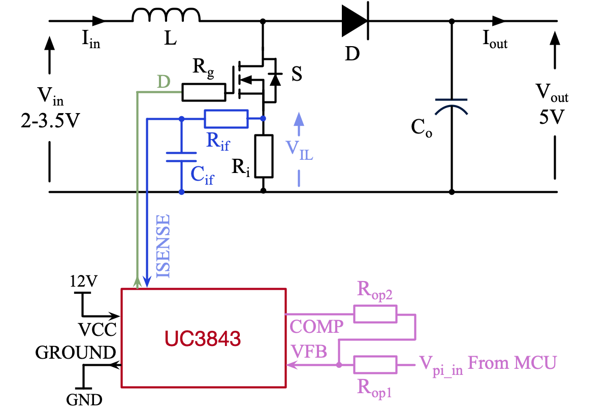</p> ] .right-column-50[ - V<sub>IL</sub> measurement in practice will have a significant noise content - A RC lowpass filter is used to filter this noise before feeding V<sub>IL</sub> to ISENSE - Filter needs to pass I<sub>L</sub>, which is at f<sub>s</sub>, without attenuation - So the cutoff frequency of the filter could be at about 100 times f<sub>s</sub> \\[ \frac {1} {2 \pi R\_{if}C\_{if} } \geqslant 100f\_s \\] - For practical reasons C<sub>if</sub> should be 100pF or larger ] --- name: S35 # Improvements to Consider - Can we reduce the size of the inductor? - How small can it be? - Can we reduce the loss in R<sub>i</sub>? - What options are there to reduce loss in R<sub>i</sub>? - How do we power the UC3843? - How to keep this small and efficient? - How can we improve the efficiency? - The diode has 0.5V drop, can we do better? - Should we operate in CCM or DCM? - What are the advantages and disadvantages of each? - Can we reduce the size of the output capacitor? - How small can it be? - Can we use analog feedback instead of digital feedback? - What are the advantages and disadvantages of each? --- class: title-slide layout: false count: false .logo-title[] # Questions?